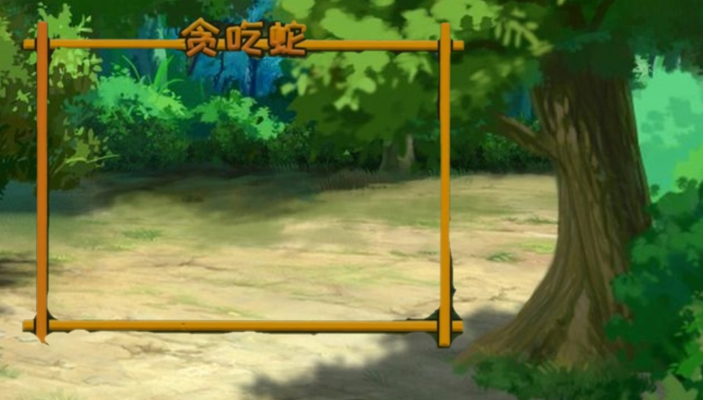
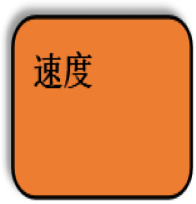

<!DOCTYPE html>
<html lang="en">
<head>
    <meta charset="UTF-8">
    <meta name="viewport" content="width=device-width, initial-scale=1.0">
    <mate http-equiv="X-UA-Compatible" content="ie=edge"></mate>
    <title>贪吃蛇</title>
</head>
<body>
    
    <!-- 
    
    
    
    
     -->
    <!-- div#container输入这个快捷键在按回车 id 就会直接出来 比较方便 -->
    <div id="container">
        <div id="map-panel">
            <!-- table#map-bg 同样table也可以用快捷键直接给属性命名 -->
            <table id="map-bg"> 
                    <!-- 这是需要动太生成单元格，所以先不写这的 tr 和 td -->
            </table>
            <!-- 这也是需要动态生成 蛇 和 食物 所以也先不去写这的 div-->
        </div>
        <div id="control-panel">
            <!-- button*4 用这个快捷键快速生成 -->
            <button></button>
            <button></button>
            <button></button>
            <button></button>
            <div id="speed-panel"></div>
        </div>
    </div>
</body>
</html>